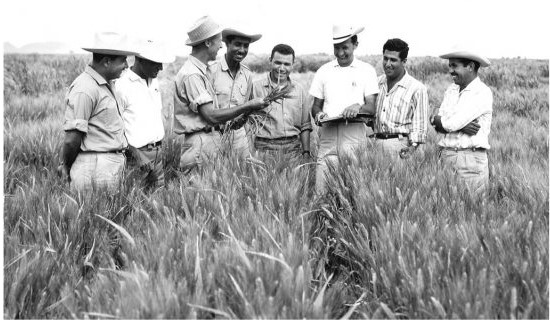

Dr. Norman Borlaug
The man who saved a billion lives

Dr. Norman Borlaug, third from the left, trains biologist in Mexico on how to increase wheat yields - part of his life-long war on hunger.
Here is a timeline of Dr Borlaug's life:
- 1914 - Born in Cresco, Iowa
- 1933 - Leaves his family's farm to attend the University of Minnesota, thanks to a Depression era program known as "National Youth Administration"
- 1935 - Has to stop school and save up more money, Works in the Civilain Conservation Corps, helping serving Americans, "I saw how food changed them", he said. All of these left scars on
me."
- 1937 - Finishes University and takes a job in the US forestry Service
- 1938 - Marries wife of 69 years Magaret Gibson. Gets laid off due to budget cuts. Inspired by Elvin Charles Stakman, he returns to school study under Stakman, who teaches him about
breeding pest-resistent plants.
- 1941 - Tries to enroll in the military after the Pearl Harbor attack, but is rejected. Instead, the military asked his lab to work on waterproof glue, DDT to control malaria, disinfectants, and
other applied science.
- 1942 - Receives a Ph.D in Genectics and Plant Pathology.
- 1944 - Rejects a 100% salary increase from Dupont, leaves behind his pregnant wife, and flies to Mexico to head a new plant Pathology program. Over the next 16 years, his team breeds
6,000 different strains of disease resistent wheat - including differnt varieties for each major climaye on Earth.
- 1945 - Discovers a way to grown wheat twice each season, doubling wheat yields
- 1953 - Crosses a short, sturdy dwarf breed of wheat with a high-yielding American breed, creating a strain that responds well to fertilizer. It goes on to provide 95% of Mexicos's wheat.
- 1962 - Visit Delhi and brings it's high-yielding strains of wheat to Indian Subcontinent in time to help mitigate mass starvation due to a rapidly expanding population
- 1970 - Recieves the Nobel Peace Prize
- 1983 - helps seven African countries dramatically increase their maize and sorghum, yields
- 1984 - becomes a distinguished professor at Texas A&M University
- 2005 - states "we will have to double the world food supply by 2050". Argues that genetically modified crops are the only way we can meet the demand, as we run out of arable land. Says
says GM crops are not inheritly dangerous because we have been Genectically modifying plants and animals for a long time. Long before we called it science people were selecting the best
breeds
- 2009 - Dies at age 95.
- "Borlaug's life and achievement to the faar reaching contributions that one man's towering intellect , persistence and scientific can make to help human peace and
progress"
--Indian Prime Minister Manmohan Singh